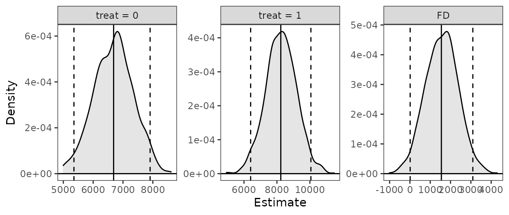
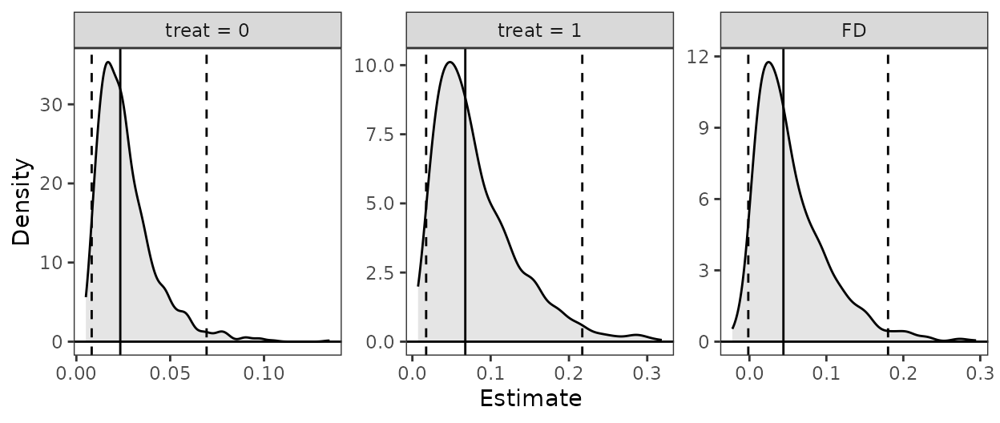
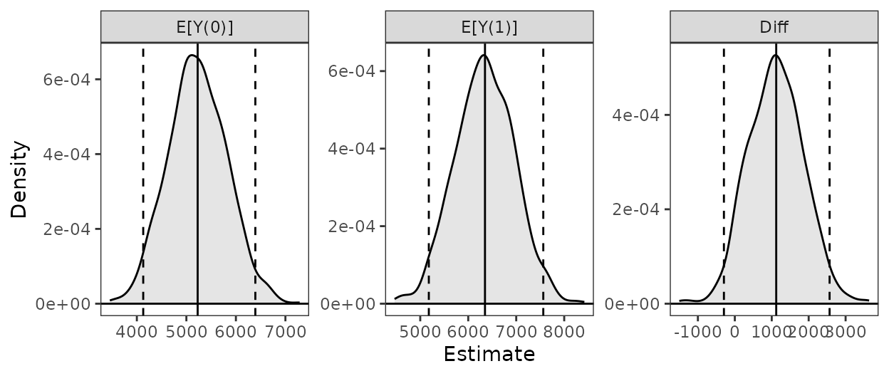
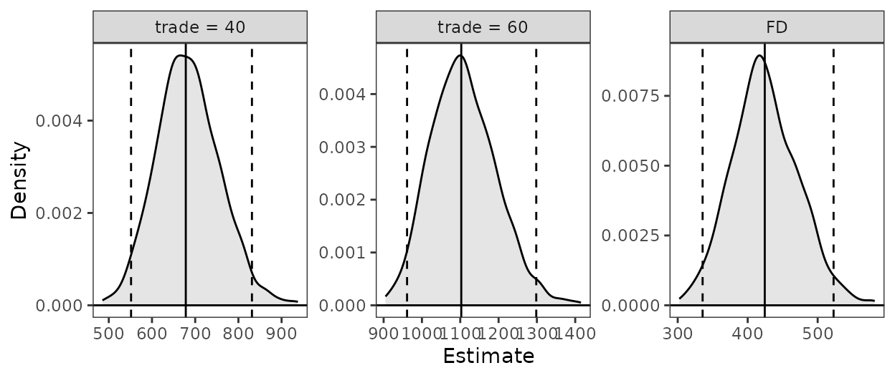

Introduction
In this document, we demonstrate some common uses of
Zelig (Imai, King, and Lau
2008) and how the same tasks can be performed using
clarify. We’ll include examples for computing predictions
at representative values (i.e., setx() and
sim() in Zelig), the rare-events logit model,
estimating the average treatment effect (ATT) after matching, and
combining estimates after multiple imputation.
The usual workflow in Zelig is to fit a model using
zelig(), specify quantities of interest to simulate using
setx() on the zelig() output, and then
simulate those quantities using sim(). clarify
uses a similar approach, except that the model is fit outside
clarify using functions in a different R package. In
addition, clarify’s sim_apply() allows for the
computation of any arbitrary quantity of interest. Unlike
Zelig, clarify follows the recommendations of
Rainey (2023) to use the estimates
computed from the original model coefficients rather than the average of
the simulated draws. We’ll demonstrate how to replicate a standard
Zelig analysis using clarify step-by-step.
Because simulation-based inference involves randomness and some of the
algorithms may not perfectly align, one shouldn’t expect results to be
identical, though in most cases, they should be similar.
Note that both Zelig and clarify have a
function called “sim()”, so we will always make it clear
which package’s sim() is being used.
Predictions at representative values
Here we’ll use the lalonde dataset in
MatchIt and fit a linear model for re78 as a
function of the treatment treat and covariates.
data("lalonde", package = "MatchIt")We’ll be interested in the predicted values of the outcome for a typical unit at each level of treatment and their first difference.
Zelig workflow
In Zelig, we fit the model using
zelig():
fit <- zelig(re78 ~ treat + age + educ + married + race +
nodegree + re74 + re75, data = lalonde,
model = "ls", cite = FALSE)Next, we use setx() and setx1() to set our
values of treat:
fit <- setx(fit, treat = 0)
fit <- setx1(fit, treat = 1)Next we simulate the values using sim():
fit <- Zelig::sim(fit)Finally, we can print and plot the predicted values and first differences:
fit
plot(fit)
clarify workflow
In clarify, we fit the model using functions outside
clarify, like stats::lm()or
fixest::feols().
fit <- lm(re78 ~ treat + age + educ + married + race +
nodegree + re74 + re75, data = lalonde)Next, we simulate the model coefficients using
clarify::sim():
s <- clarify::sim(fit)Next, we use sim_setx() to set our values of the
predictors:
Finally, we can summarize and plot the predicted values:
summary(est)
#> Estimate 2.5 % 97.5 %
#> treat = 0 6686.0 5355.6 7909.3
#> treat = 1 8234.3 6405.9 10060.0
#> FD 1548.2 12.5 3096.9
plot(est)
Rare-events logit
Zelig uses a special method for logistic regression with
rare events as described in King and Zeng
(2001). This is the primary implementation of the method in R.
However, newer methods have been developed that perform similarly to or
better than the method of King and Zeng (Puhr et
al. 2017) and are implemented in R packages that are compatible
with clarify, such as logistf and
brglm2.
Here, we’ll use the lalonde dataset with a constructed
rare outcome variable to demonstrate how to perform a rare events
logistic regression in Zelig and in
clarify.
data("lalonde", package = "MatchIt")
#Rare outcome: 1978 earnings over $20k; ~6% prevalence
lalonde$re78_20k <- lalonde$re78 >= 20000
Zelig workflow
In Zelig, we fit a rare events logistic model using
zelig() with model = "relogit".
fit <- zelig(re78_20k ~ treat + age + educ + married + race +
nodegree + re74 + re75, data = lalonde,
model = "relogit", cite = FALSE)
fitWe can compute predicted values at representative values using
setx() and Zelig::sim() as above.
fit <- setx(fit, treat = 0)
fit <- setx1(fit, treat = 1)
fit <- Zelig::sim(fit)
fit
plot(fit)
clarify workflow
Here, we’ll use logistf::logistif() with
flic = TRUE, which performs a variation on Firth’s logistic
regression with a correction for bias in the intercept (Puhr et al. 2017).
fit <- logistf::logistf(re78_20k ~ treat + age + educ + married + race +
nodegree + re74 + re75, data = lalonde,
flic = TRUE)
summary(fit)
#> logistf::logistf(formula = re78_20k ~ treat + age + educ + married +
#> race + nodegree + re74 + re75, data = lalonde, flic = TRUE)
#>
#> Model fitted by Penalized ML
#> Coefficients:
#> coef se(coef) lower 0.95 upper 0.95 Chisq
#> (Intercept) -9.313465e+00 2.036981e+00 -1.330595e+01 -5.3209820512 24.4427501
#> treat 1.106769e+00 6.165332e-01 -1.029333e-01 2.3139987641 3.2185792
#> age 4.144350e-02 2.147498e-02 -8.432745e-04 0.0825427498 3.6937075
#> educ 2.936673e-01 1.283624e-01 4.612509e-02 0.5477908006 5.4633187
#> married 2.909164e-01 4.769332e-01 -6.309243e-01 1.2240602694 0.3844676
#> racehispan 1.056388e+00 7.276772e-01 -4.150796e-01 2.4305568008 2.0440063
#> racewhite 5.431919e-01 6.160352e-01 -6.255328e-01 1.7838676828 0.8008622
#> nodegree 2.868319e-01 5.852738e-01 -8.531608e-01 1.4243907533 0.2462839
#> re74 1.108995e-04 2.821452e-05 5.775266e-05 0.0001664918 17.0427331
#> re75 4.457916e-05 4.720736e-05 -4.706292e-05 0.0001334568 0.9472092
#> p method
#> (Intercept) 7.655103e-07 1
#> treat 7.280680e-02 2
#> age 5.461808e-02 2
#> educ 1.941973e-02 2
#> married 5.352219e-01 2
#> racehispan 1.528067e-01 2
#> racewhite 3.708357e-01 2
#> nodegree 6.197040e-01 2
#> re74 3.654797e-05 2
#> re75 3.304307e-01 2
#>
#> Method: 1-Wald, 2-Profile penalized log-likelihood, 3-None
#>
#> Likelihood ratio test=65.80085 on 9 df, p=1.007627e-10, n=614
#> Wald test = 179.4243 on 9 df, p = 0We can compute predictions at representative values using
clarify::sim() and sim_setx().
s <- clarify::sim(fit)
est <- sim_setx(s, x = list(treat = 0), x1 = list(treat = 1),
verbose = FALSE)
summary(est)
#> Estimate 2.5 % 97.5 %
#> treat = 0 0.02341 0.00817 0.06940
#> treat = 1 0.06760 0.01760 0.21703
#> FD 0.04419 -0.00148 0.18017
plot(est)
Estimating the ATT after matching
Here we’ll use the lalonde dataset and perform
propensity score matching and then fit a linear model for
re78 as a function of the treatment treat, the
covariates, and their interaction. From this model, we’ll compute the
ATT of treat using Zelig and
clarify.
data("lalonde", package = "MatchIt")
m.out <- MatchIt::matchit(treat ~ age + educ + married + race +
nodegree + re74 + re75, data = lalonde,
method = "nearest")
Zelig workflow
In Zelig, we fit the model using zelig()
directly on the matchit object:
fit <- zelig(re78 ~ treat * (age + educ + married + race +
nodegree + re74 + re75),
data = m.out, model = "ls", cite = FALSE)Next, we use ATT() to request the ATT of
treat and simulate the values:
fit <- ATT(fit, "treat")
fit
plot(fit)
clarify workflow
In clarify, we need to extract the matched dataset and
fit a model outside clarify using another package.
m.data <- MatchIt::match.data(m.out)
fit <- lm(re78 ~ treat * (age + educ + married + race +
nodegree + re74 + re75),
data = m.data)Next, we simulate the model coefficients using
clarify::sim(). Because we performed pair matching, we will
request a cluster-robust standard error:
s <- clarify::sim(fit, vcov = ~subclass)Next, we use sim_ame() to request the average marginal
effect of treat within the subset of treated units:
est <- sim_ame(s, var = "treat", subset = treat == 1,
contrast = "diff", verbose = FALSE)Finally, we can summarize and plot the ATT:
summary(est)
#> Estimate 2.5 % 97.5 %
#> E[Y(0)] 5228 4129 6393
#> E[Y(1)] 6349 5179 7564
#> Diff 1121 -295 2566
plot(est)
Combining results after multiple imputation
Here we’ll use the africa dataset in
Amelia to demonstrate combining estimates after multiple
imputation. This analysis is also demonstrated using
clarify at the end of vignette("clarify").
First we multiply impute the data using amelia() using
the specification in the Amelia documentation.
# Multiple imputation
a.out <- amelia(x = africa, m = 10, cs = "country",
ts = "year", logs = "gdp_pc", p2s = 0)
Zelig workflow
With Zelig, we can supply the amelia object
directly to the data argument of zelig() to
fit a model in each imputed dataset:
fit <- zelig(gdp_pc ~ infl * trade, data = a.out,
model = "ls", cite = FALSE)Summarizing the coefficient estimates after the simulation can be
done using summary():
summary(fit)We can use Zelig::sim() and setx() to
compute predictions at specified values of the predictors:
fit <- setx(fit, infl = 0, trade = 40)
fit <- setx1(fit, infl = 0, trade = 60)
fit <- Zelig::sim(fit)Zelig does not allow you to combine predicted values
across imputations.
fit
plot(fit)
clarify workflow
clarify does not combine coefficients, unlike
zelig(); instead, the models should be fit using
Amelia::with(). To view the combined coefficient estimates,
use Amelia::mi.combine().
#Use Amelia functions to model and combine coefficients
fits <- with(a.out, lm(gdp_pc ~ infl * trade))
mi.combine(fits)
#> # A tibble: 4 × 8
#> term estimate std.error statistic p.value df r miss.info
#> <chr> <dbl> <dbl> <dbl> <dbl> <dbl> <dbl> <dbl>
#> 1 (Intercept) -171. 118. -1.44 1.85e+ 0 12575. 0.0275 0.0269
#> 2 infl 12.2 9.42 1.29 1.97e- 1 72291. 0.0113 0.0112
#> 3 trade 21.2 1.83 11.6 4.85e-31 19660. 0.0219 0.0215
#> 4 infl:trade -0.289 0.141 -2.05 1.96e+ 0 83194. 0.0105 0.0104Derived quantities can be computed using
clarify::misim() and sim_apply() or its
wrappers on the with() output, which is a list of
regression model fits:
#Simulate coefficients, 100 in each of 10 imputations
s <- misim(fits, n = 100)
#Compute predictions at specified values
est <- sim_setx(s, x = list(infl = 0, trade = 40),
x1 = list(infl = 0, trade = 60),
verbose = FALSE)
summary(est)
#> Estimate 2.5 % 97.5 %
#> trade = 40 678 552 831
#> trade = 60 1103 961 1298
#> FD 424 336 523
plot(est)